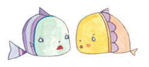
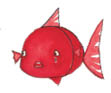
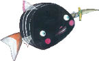
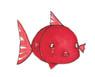

Öfkeye kapılan balıkçıl, balığın arkasından atılmış. Küçük Kara Balık, yakalandıktan sonra denize düşene kadar birkaç dakika suyun dışında kalmışmış. İşte bu yüzden, denize düştükten sonra birkaç dakika kendine gelememiş, kendisini toparlayana kadar aradan biraz zaman geçmesi gerekmiş. Ne var ki o arada keskin gözlü balıkçıl Küçük Kara Balık’ın nerede olduğunu görüp yeniden peşine düşmüş, dalgaların arasına dalmış, Küçük Kara Balık’ı yakalamış, o daha ne olduğunu anlayamadan bir hamlede yutuvermiş. Küçük Kara Balık bir anda kendini hiç çıkışı olmayan karanlık, nemli bir yerde bulmuş.

Birkaç dakika geçince gözleri karanlığa alışmış; birden bir ses duymuş, minicik bir balık bir köşeye sinmiş, annesine
sesleniyormuş. Küçük Kara Balık onun yanına gidip tatlı bir sesle,
“Merhaba,” demiş. “Neden ağlıyorsun?”

“Sen de kimsin?” diye sormuş minik balık, hıçkıra hıçkıra. “Hem ne biçim soru soruyorsun? Ölmekte olduğumu görmüyor musun? Ah, anneciğim! Benim sonum geldi, balıkçıların ağlarını yakalamak için seninle gelemeyeceğim!”
“Kes şu ağlamayı,” demiş Küçük Kara Balık, sertçe. “Balıkların yüzkarasısın sen. Ayıp ayıp!”
Minik balık kendini toparlayınca da devam etmiş:
“Balıkçılı öldürüp bütün balıkları kurtarmak istiyorum, ama bunun için önce midesinden çıkmam gerek!”
“Sen kendin ölmektesin,” demiş minik balık, “balıkçılı nasıl öldüreceksin ki?”
Küçük Kara Balık ona kamasını göstermiş.
“İşte bu bıçakla öldüreceğim,” demiş. “Şimdi söyleyeceklerimi iyi dinle. Ben kıvranmaya başlayınca balıkçıl gıdıklanacak. Gülmek için gagasını açar açmaz sen zıplayıp dışarı çıkarsın!”
“Sen ne olacaksın?” diye sormuş minicik balık.
“Bu korkunç kuşu öldürmeden buradan ayrılmam!” demiş Küçük Kara Balık.
Bunu söyler söylemez de var gücüyle kıvranmaya başlamış. Çok geçmeden balıkçıl gagasını açmış ve minik balık zıplayıp denize koşmuş, yüzerek oradan uzaklaşmış. Sonra durup Küçük Kara Balık’ı beklemiş, ama gelen giden olmamış. Balıkçılsa suyun içinde debeleniyor, acıyla haykırıyormuş. Öylesine büyük bir acı çekiyormuş ki, bir türlü uçamıyormuş. Sonunda suyun altına kaymış, denizin dibine sürüklenmiş; gitgide güçsüzleşiyor, çırpınmaları gitgide zayıflıyormuş. Ama Küçük Kara Balık’ı bir daha gören olmamış.”

Yaşlı balık nine öyküsünü bitirince on iki bin çocuğuyla torununa artık yatmalarını söyledi. Ama hepsi bir ağızdan,
“Büyükanne, Küçük Kara Balık’a ne oldu?” diye sordular. “Ne olduğunu anlatmadın bize!”
“Yarın akşamı bekleyin,” dedi balık nine. “Hadi artık yatın bakalım, iyi geceler!”
Çocuklarıyla torunları balık nineye iyi geceler dilediler ve gidip yattılar. Yaşlı balık nine de yatıp uyudu. Ama küçük bir kırmızı balığı bir türlü uyku tutmuyordu. Bütün gece hiç gözünü kırpmadan denizi düşündü durdu...
